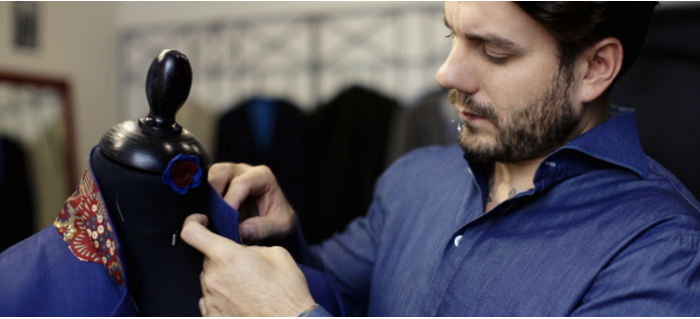
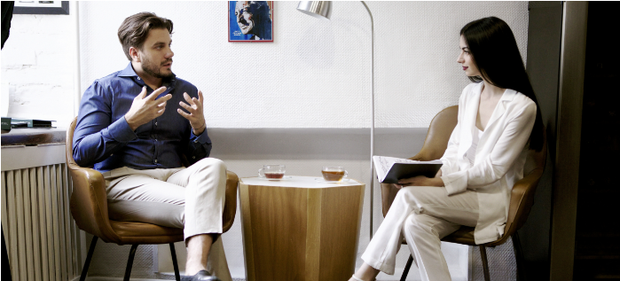

Если вы хоть раз посетили ателье Timoti Fain Alta Sartoria, то уже никогда не позволите себе прийти туда несоответствующее одетым.
Приближаясь к дому на улице Шота Руставели, дом 30, вы обязательно остановитесь у входной двери и обратите внимание на окно-витрину – здесь начинается встреча с традициями итальянских портных и созданием мужского костюма в неаполитанском стиле. Особенность интерьера и изделий сартории прослеживается в их деталях, как и сам стиль основателя именного ателье – Timoti Fain.
В окружении ручной работы и материализации мечты мы поговорили о влиянии стиля на человека.
O. K. Ты пришёл к своей профессии, руководствуясь актуальными модными тенденциями или же потребностью привнести своё?
T. F. Моим вдохновением и судьбоносным поворотом стала деятельность итальянского дизайнера Эннио Капаза. Прочитав его интервью в журнале «Playboy» (смеется), в период обучения в академии строительства и архитектуры, я понял, что туда больше не вернусь. Меня заинтересовал тот факт, что Эннио Капаза, будучи итальянцем, создавал достаточно нестандартную классическую одежду – несвойственную Италии. Она, скорее, была рок-н-ролльной – укороченная, затянутая и перетянутая. Я начал углубляться, изучать и, таким образом, приближаться к самому себе. Храню эту вырезку из журнала до сих пор.
В период моего обучения дизайну одежды произошёл переворот – мужская мода стала более насыщенной и выразительной, появились новые ответвления. Стремление к чему-то новому, провоцировало меня на поиски вдохновения в самых неожиданных местах и явлениях. Например, для создания своей первой коллекции я обратился к парикмахерскому искусству. Мои модели-парни вышли на подиум в обтягивающей одежде и напоминали лощеных красавцев с безукоризненным внешним видом. У каждого из них был аксессуар, который стал завершающей деталью всего ансамбля – поясная сумка для парикмахерских инструментов.
Но мне стало быстро неинтересно создавать для трендов, актуальность которых решает определённая формула. Порой появление такой тенденции, как ношение юбки мужчинами, меня вводило в депрессию. Поэтому я бы сказал, что к учёбе пришёл, благодаря модным тенденциям, а к профессии – с потребностью привнести свое.
Со временем, как по волшебству, сам того не ожидая, я получил предложение стать креативным директором в дизайнерском доме и возглавить мужскую линию одежды, которая создавала bespoke костюмы. И тогда я с головой окунулся в то, чем занимаюсь сейчас.
Было много ошибок, ложных мнений относительно того, что я делаю и как это должно выглядеть. Но все это в совокупности подвело меня к видению моего идеального костюма.
O. K. Где ты черпаешь вдохновение?
T. F. На этот случай у меня всегда есть в запасе несколько лайфхаков. В процессе поиска свежих идей, на помощь приходит известная поговорка: «Всё новое – это хорошо забытое старое». Поэтому я обращаюсь за вдохновением к самому изысканному периоду в мировой истории – окончание Великой депрессии – время, когда люди «наелись» недостатков, нищеты, и даже простые рабочие стремились одеваться стильно. Вечером это был смокинги, днем – непарные костюмы, выутюженные со стрелкой брюки с высокой посадкой. Весь мир поглотила элегантность. Об этом свидетельствуют иллюстрации уличной моды того времени, которые я периодически просматриваю в поиске новых открытий и творческого воодушевления.
Конечно же, желание творить во мне вызывает не только одежда. Кинематограф и литература – неиссякаемые источники вдохновения. Но есть в моем деле определённая специфика. Для сравнения: fashion-дизайнер, создавая коллекцию, старается вникнуть в актуальность времени и ощутить окружающую среду, а когда ты работаешь с классической одеждой, то атмосфера уже присутствует везде – от примерки до финальной фотографии изделия. Поэтому в моем деле важны знания, как основа создания классического костюма. Тут уже нельзя из контекста вырвать какую-то часть и внедрить ее в ансамбль. Но даже в классической одежде есть моменты, которые можно преподнести более эффектно. Я подглядел одно выразительное средство у неаполитанского портного – над карманом нашивают хлястик с пуговицей – комфортное приспособление для крепления газеты. А представь, как это элегантно выглядит со стороны! Всегда можно экспериментировать с деталями.
На самом деле, много чего меняется. Но, не зная тонкостей мастерства, особо изменений не увидишь, потому что они все происходят либо внутри – по части обработки, либо меняются линии кроя, которые все равно, так или иначе, приводят к тому, что силуэт должен быть приталенным. И опять мы возвращаемся к основе.
O. K. Помнишь ли ты эмоции, которые переполняли тебя, когда ты надел свой первый костюм?
T. F. Ранее, в моей жизни было не так много красивого, только хорошее. Наверное, поэтому стремление к красоте было всегда, поэтому и возникла любовь к костюмам. В детстве у меня их было всего лишь два. Первый костюм мне сшила сестра, по случаю чьей-то свадьбы, когда мне было 4 года. Я помню это внимание людей, их восторженные взгляды... Было здорово от того, что ты, вроде как, ничего не сделал, но чувствуешь себя так, как будто бы тебя по-другому воспитали и ты живешь абсолютно в ином окружении. Это был тот случай, когда мой внешний вид диктовал мое внутреннее состояние. Второй костюм мне достался от моего брата в качестве подарка на Новый год. Это был двубортный непарный костюм – чёрные брюки и серый пиджак. Еще мне тогда подарили игрушечную винтовку. В тот момент было такое ощущение, что в костюме и с оружием мне море по колено!
O. K. Какую часть твоего гардероба составляет одежда от Timoti Fain Alta Sartoria?
T. F. Дело в том, что все вещи, которые ко мне попадают, так или иначе, переделываются. Мне кажется, что 90 % моего гардероба – это те вещи, к которым я приложил руку. Я забыл что значит «шоппинг». Я просто не хожу по магазинам. Если вещь не создана мной, то это вещь, которую мне передала мама из Италии. А 10 % – это поло, которые я не могу шить из-за отсутствия швейной спецмашины.
O. K. Возможно ли даже за работой портного выглядеть джентльменом?
T. F. Нужно! В нашей жизни важно правильно и комфортно ощущать момент сейчас. Прошлое уже не прожить, а будущее только формируется, поэтому нужно вкушать каждое мгновение.
Когда на мне рубашка и брюки, манера держаться и жесты регулируются бессознательно, ощущение такое, что даже моя аура напитывается другой энергией – сильной и работоспособной. Случается такое, что я могу прийти на работу в спортивных штанах, и тогда возникает такое чувство, как будто бы я забежал ненадолго и это никак не располагает к работе над костюмом. Как можно создавать красоту, находясь в спортивных штанах?! Поэтому сейчас я занимаюсь тем, чтобы наша команда работала в форме, которая была бы элегантной и комфортной одновременно. Таким образом, хочется приоткрыть людям «закулисье» нашего ателье – показать, что мы не только создаём красивую одежду, но и делаем это красиво.

O. K. Как стремление к идеалу во внешности влияет на твое внутреннее состояние?
T. F. С тех пор как я начал одеваться элегантно, я забыл, что такое депрессия. Человек, которому есть чем заняться, никогда не бывает в подавленном состоянии. А иметь элегантный внешний вид – это постоянно быть при деле. Ты обязан продумывать свой гардероб на неделю вперед, находить варианты комбинации вещей и аксессуаров, чтобы у людей не складывалось впечатления, что ты постоянно в одном и том же костюме. Потому что даже я, будучи владельцем дома портновского искусства, имею всего порядка семи костюмов: четыре из них – летние, три из них – зимние и осенние. Когда ты начинаешь задумываться над тем, какую фактуру и цветовую гамму, и в какой день ты будешь сочетать, появляется азарт. Ты находишься в постоянном поиске визуальных решений, которые бы кардинально изменили привычный look – занимаешься подбором шляпы, платка, средств по уходу за обувью и т. д..
Меня каждый день встречают по одежке, даже охранник, который открывает двери в офис. Это обязывает готовить свой образ заранее, потому как, одеваясь под настроение, ты рискуешь усомниться в своём выборе. Ведь эмоции – непостоянны и способны меняться несколько раз за день. А стабильная улыбка на лице – это продуманные детали и уверенность в своём внешнем виде.
O. K. Были переломные моменты, и возникало ли желание сменить костюм на одежду, которая не обязывает?
T. F. Да. Когда я был в Буковеле. По колено снега, в туфлях немного холодно и неудобно (смеется). А если серьёзно, то я всегда стремился к тому, чтобы элегантная одежда была не только красивой, но и комфортной. И, конечно же, соответствовала месту, в котором ты находишься.
Исключение – работа диджеем на вечеринках. Таская за собой две сумки с дисками и пластинками, мне удобнее быть в джинсах и футболке. И честно говоря, это располагает к тебе людей. А если на вечеринку и приходят в костюмах – то это уже корпоратив.
Но абсолютно никакого морального дискомфорта никогда не возникало, и желания сменить костюм на что-то другое тоже. Ведь мой внешний вид – отражение моего внутреннего «Я».
О. К. Наличие вкуса – талант или наказание?
T. F. Наказание талантом. Это с одной стороны инструмент самовыражения и умение подать себя в лучшем виде, а с другой – непрекращающаяся работа над собой.
O. K. Как обрести баланс между желанием выглядеть стильным и возможностью быть таковым?
T. F. Это был очень важный вопрос для меня во время учебы в университете. Спасали секонд-хенды – самый доступный способ, чтобы выглядеть стильно и красиво. Даже если человек не умеет шить, то, уже найдя классическую вещь своего размера, можно выглядеть, по крайней мере, опрятно. Зачастую, в магазинах подержанной одежды есть возможность найти хорошую вещь, сшитую из отличной ткани, нежели найти эту же ткань по доступной цене. Если же нереально, к примеру, собрать полный ансамбль bespoke костюма, то стоит заказать несколько платков, отшитых по принципу создания аксессуаров ручной работы. Платочек способен многое «рассказать» о своём владельце, особенно в кругах ценителей. Это касательно материального аспекта данного вопроса.
Если говорить о том, как же успевать всегда выглядеть стильно и ухожено, то мой совет – один раз потратить время на подбор своего гардероба, прикладывая в дальнейшем минимальные дополнительные усилия. Подобрав look – пример того, как хотелось бы выглядеть, в будущем можно видоизменять его с помощью рубашек разной фактуры, галстуков и других аксессуаров. Удобный способ выглядеть всегда стильно и разнообразно.
Что касается чувства вкуса, то, как и всё во Вселенной, это явление имеет свою формулу. Это уравнение, которое рано или поздно, если искать и усердно заниматься, будет решено. Главное не забывать про свою индивидуальность.
O. K. Есть ли придел у совершенства?
T. F. Говорить о совершенстве, не достигнув его, очень сложно. Я могу испытать это ощущение всего лишь на несколько секунд, когда незаметно для себя самого, обретаю внутреннее спокойствие. Вот иду я по улице, поправляю свою шляпу, внезапно ловлю себя на мысли, что я же так давно хотел так выглядеть, носить шляпу… И я полностью соответствую тому, что мной двигает именно в данный момент. Определённо, у совершенства нет предела, ведь, у каждого времени оно свое. Одно скажу с уверенностью – не нужно стремиться к навязанному идеалу, найдите свое совершенство.
P.S. Во время нашего интервью, к Тимофею зашёл его клиент, чтобы поблагодарить за пиджак. Мужчина воодушевлённо делился своими чувствами, которые наполняли его в тот день, когда он впервые надел готовое изделие: «Я себя по-другому ощущал, жестикуляция и манеры отличались от обычных, хотелось держать спину ровно… И, вообще, я решил купить новые туфли!»
Поэтому неважно как вы придёте к своему стилю – от внешнего к внутреннему или от внутреннего к внешнему. Главное, чтобы оба «Я» были в гармонии друг с другом.

Фото - Ryna Noir